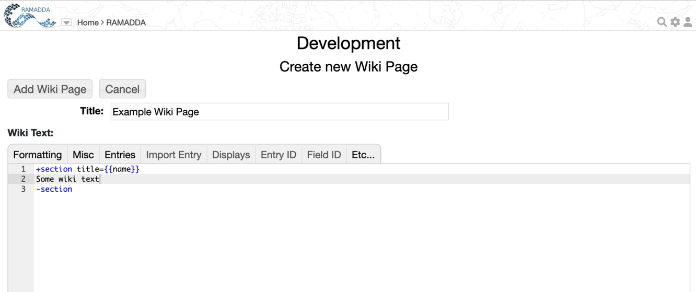

RAMADDA uses wiki text in a number of ways. You can create Wiki Page entries, you can style any entry
using wiki text and you can also add in a Page Style metadata element that allows you
to define the style used for a whole collection of entries.
RAMADDA provides a wiki text editor:
Image 1: Wiki Text Editor
-
The buttons allow you to add basic wiki markup.
-
The Add property menu adds RAMADDA specific properties from the entry that is being displayed
(e.g., name, description, children entries, etc).
-
The Add entry id menu allows you to specify the entry to use in properties (see below).
-
The Add entry link menu adds wiki links to other entries.
You can use the wiki text display capabilities to customize the default
HTML view of any other entry or folder types. If the description of the entry
begins with "<wiki>" then we treat the description as wiki text
and process it to create the default HTML view. This allows you to override the default html display and come up with your own display.
For example, here is Unidata's
2009 User's Workshop page and here is the desciption of that page:
<wiki>
<center>
<h3>
Welcome to the RAMADDA area for the Spring 2009 User's Workshop.<br>Using Operational and Experimental Observations in Geoscience Education<br>
June 8th-12th</h3>
</center>
<table width="100%"><tr valign="top"><td>
{{tree title="Links"}}
</td><td>
<img src="http://www.unidata.ucar.edu/photos/2006userwkshp/collage.jpg" width="500">
</td></tr></table>
Presentation Schedule:
{{import entry="075c24ad-9078-4f3f-8a96-1866668a449b" output="calendar.calendar" }}
In this case we use html and the import tags to come up with the page layout.
One of the entry types that RAMADDA provides is a Wiki Page entry.
You create a new Wiki Page just like you create any entry - in a folder
that you have create privileges for go to File->New Entry menu.
In the form select "Wiki Page" to go to the Wiki Page create form:
Image 2: Wiki Page Create Form
{kind=link}
{kind=link}